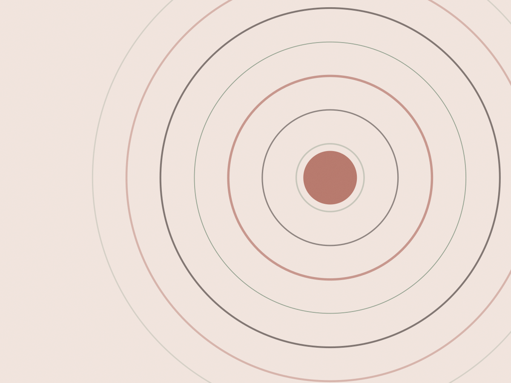

Documentário de casamento · todo o Brasil
Dez horas de cobertura,
dois fotógrafos,
nenhum retrato posado por obrigação
O dia é tratado como documentário: a preparação, a cerimônia e a festa até o último convidado sair. As 600 fotos tratadas ficam com vocês, e o álbum é escolhido junto, em duas sessões de duas horas.
O que está incluso
O que a cobertura inclui
Pacote único, sem taxa escondida por hora extra de festa. O que varia é o deslocamento e o tamanho do álbum.
- 10 horas de cobertura
- Da preparação ao fim da festa. Costuma começar duas horas antes da cerimônia.
- Dois fotógrafos
- Um acompanha a preparação de cada lado e os dois cobrem cerimônia e festa.
- 600 fotos tratadas
- Seleção sem foto repetida ou fora de foco, com correção de cor e entrega em alta resolução.
- Galeria online por 2 anos
- Link com senha para os convidados baixarem. A galeria não expira no primeiro ano.
- Álbum 30×30 cm
- Quarenta páginas em papel fotográfico, capa dura. A escolha é feita em duas sessões de duas horas.
- Ensaio de pré-wedding
- Opcional, duas horas em local a combinar. Serve mais para vocês se acostumarem com a câmera do que para o álbum.
Três casamentos, com o que aconteceu
Cidade, data e uma frase que resume o dia — sem "o amor venceu tudo".
-
Petrópolis · março de 2024
Clara e Vinícius
Choveu das três às cinco da tarde e a cerimônia ao ar livre virou dentro do salão. As fotos que eles mais gostaram são justamente as do corre-corre.
-
Tiradentes · setembro de 2023
Marina e Rafa
Casamento de tarde com doze convidados. Cobertura de seis horas, sem festa — terminou com um jantar na praça.
-
Rio de Janeiro · maio de 2024
Duda e Léo
Festa de trezentas pessoas e a primeira dança ensaiada por três semanas. A sequência dela saiu inteira, do primeiro acorde ao fim.
Do primeiro encontro ao álbum
Quatro etapas, e nenhuma delas envolve lista de pose obrigatória. Se você quer uma foto específica, avisa — a gente encaixa.
-
Conversa e contrato
Uma hora por videochamada, para ver álbuns completos — não só as melhores fotos do site. Depois disso, contrato e reserva de data.
-
Ensaio de pré-wedding
Duas horas, cerca de dois meses antes. Serve para vocês verem como eu trabalho e para eu entender como vocês se movem juntos.
-
O dia
Chego duas horas antes. Não interrompo cerimônia nem discurso, e a única coisa que peço é o cronograma com os horários combinados.
-
Seleção e álbum
Entrega das fotos tratadas em 30 dias e duas sessões para escolher as 40 páginas. O álbum fica pronto em até 90 dias.
“Não lembro de nenhum momento em que a gente tenha posado. E as fotos parecem o dia inteiro, não uma sequência de quadros.”
“Mandei uma lista de dez fotos que eu queria. Todas existem, e nenhuma delas ficou com cara de encomenda.”
Datas abertas
Atendo até quinze casamentos por ano, um por fim de semana. A agenda de 2026 está aberta e a de 2025 tem quatro datas livres.
Mande a data e o local. Respondo em um dia útil com a disponibilidade e o valor final com deslocamento.
- (21) 99044-8812
- oi@estudionorte.foto
- Base
- Duque de Caxias, Rio de Janeiro
- Deslocamento
- Incluso até 80 km da base